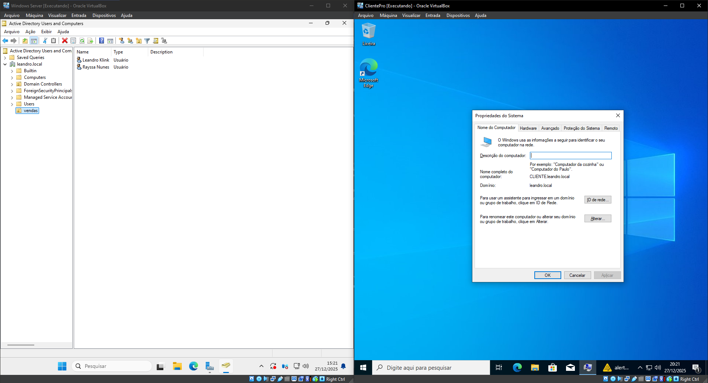
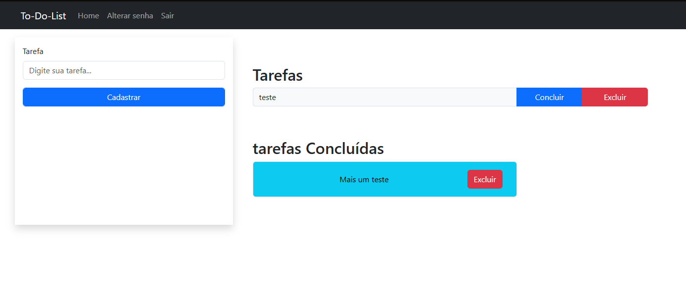
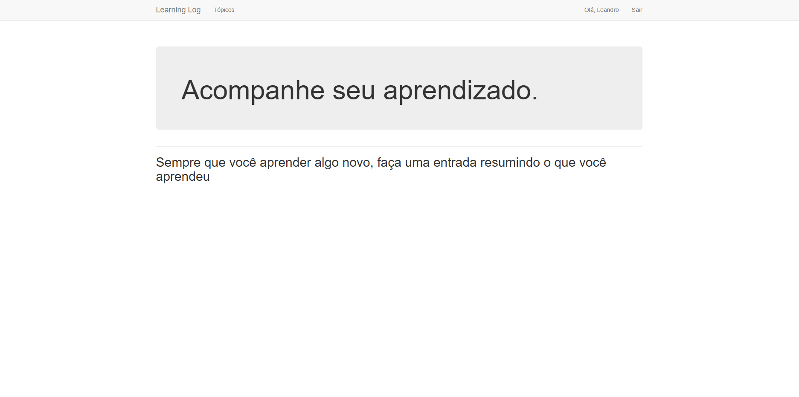

Sobre Mim
Sou estudante de Análise e Desenvolvimento de Sistemas, com foco em desenvolvimento de software e tecnologia. Tenho estudado Java, Python, SQL e tecnologias web, além de fundamentos de redes. Busco oportunidades na área de TI para aplicar meus conhecimentos, evoluir tecnicamente e contribuir com soluções eficientes. Valorizo aprendizado contínuo, organização e resolução de problemas.
Tecnologias que Domino
Java

Desenvolvimento backend com foco em orientação a objetos e APIs REST.
Python

Automação, scripts e lógica de programação com foco em produtividade.
JavaScript

Manipulação do DOM e interatividade para aplicações web dinâmicas.
HTML / CSS

Estruturação e estilização de interfaces modernas e responsivas.
Git e GitHub

Versionamento de código, controle de mudanças e colaboração em projetos.
Estrutura de Redes

Fundamentos de redes, endereçamento IP e organização de infraestrutura.
Cisco Packet Tracer

Simulação e configuração de topologias de rede para estudo e prática.
Projetos
Sistema de Monitoramento de Sensores e Alarmes
Projeto em Java que simula um sistema de monitoramento industrial, baseado em equipamentos e sensores reais de uma usina.
Java

Laboratório de Redes de Computadores e Active Directory
laboratório prático de Redes de Computadores e Active Directory, foco em fundamentos de redes e administração de servidores Windows.
Windows Server
Active Directory
ToDoLists Django
Projeto de estudos em Django para implementar uma To-Do List (Registros de atividades) utilizando python e django.
Python
Django

LearningLog Django
Projeto de estudos para registro de tópicos de estudo utilzando python e django.
Python
Django

Certificações
Curso Cisco Packet Tracer [20h]
HARDWARE REDES BRASIL
De forma prática, utilizando o simulador Cisco Packet Tracer foram abordados os temas de Criação de redes, comunicação entre servidores e clientes, criação de servidores (WEB, DHCP, DNS), redes Wi-Fi, topologias de redes, configuração de IP, criação de rotas estáticas
Ver Certificado
Curso prático de Redes de Computadores [20h]
HARDWARE REDES BRASIL
Conceito de rede, cabeamento, IP, configuração de redes domésticas, servidores, Windows Server, ADS, DNS, DHCP, utilização das redes de computadores, classificação das redes, tecnologias de redes, Introdução ao hardware de rede, Introdução ao software de rede e equipamentos de rede e protocolos de redes.
Ver Certificado
Fechar
Sistema de Monitoramento de Sensores e Alarmes
Este projeto é uma simulação de um sistema de monitoramento de sensores industriais desenvolvido em Java. O sistema modela equipamentos e sensores responsáveis por registrar medições ao longo do tempo, verificar se os valores estão dentro de limites definidos e gerar alarmes quando ocorre algum desvio. Cada leitura realizada pelo sensor é armazenada como uma medição com data e hora, formando um histórico que pode ser exibido no Output, e mostrando alarmes de todos os valores que passaram dos limites pré-definidos, ordenando por severidade, Ao final da simulação, o histórico de medições pode ser visualizado em um gráfico. O objetivo do projeto é aplicar conceitos de programação orientada a objetos e manipulação de dados de sensores, simulando o funcionamento básico de sistemas utilizados em monitoramento industrial e IoT.
Tecnologias utilizadas: Java, Programação Orientada a Objetos (POO), Java Streams, Collections (List/ArrayList) e JFreeChart para visualização gráfica dos dados.